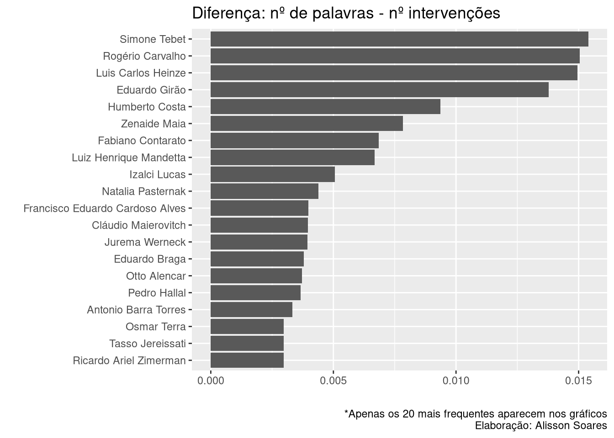

14 Apêndice: Exemplo Análise - CPI da Pandemia
Apresento aqui um exemplo de análise possível utilizando várias técnicas de análise textual. Uma outra versão deste texto, porém não idêntico, se encontra neste link.
14.1 Introdução
Atenção: O texto a seguir não tem o intuito de ser uma análise da CPI da Pandemia, mas sim de servir de breve tutorial, de fornecer ideias de uso de algumas das ferramentas disponíveis para análise textual, que podem permitir análises posteriores mais apuradas por quem se interessar pelo tema da CPI. Utilizamos aqui a base de dados feita a partir das notas taquigráficas das reuniões da CPI da pandemia, ocorrida no ano de 2021. Confira o readme.
A primeira coisa a se fazer é colocar como opção global de nosso projeto que strings não sejam consideradas como fatores.
# Opções globais
options(stringsAsFactors = FALSE)Carregando alguns dos principais pacotes necessários. Outros serão incorporados.
library(dplyr) # para manipular os dados
library(magrittr) # para usamors os pipes: %>%
library(ggplot2) # para gerar gráficos mais agradáveisVamos importar os dados, e temos duas opções.
Opção 1: baixando a base de dados direto do site
NotasTaq <- readRDS(url("https://github.com/SoaresAlisson/NotasTaquigraficas/raw/master/rds/NT_todas_normalizado.rds"))Opção 2: utilizando arquivo no seu computador.
É possível também baixar a base de dados em seu computador e carregá-la dali.
Para tal, 1) baixe o aquivo pelo site e salve em seu computador; 2) copie o endereço do arquivo no seu computador 3) Use a função readRDS() com o endereço do arquivo, como no exemplo abaixo.
Ali utiliza-se um endereço padrão Linux.
NotasTaq <- readRDS("~/Documentos/NT_todas_normalizado.rds")Caso utilize Windows, o caminho para o arquivo pode ser que tenha que ser algo como:
NotasTaq <- readRDS("c:\Documentos\NT_todas_normalizado.rds")Vamos transformar nosso dataframe em tibble, caso ainda não o seja
NotasTaq <- tibble::as_tibble(NotasTaq)
# conferindo se é tibble
class(NotasTaq)
## [1] "tbl_df" "tbl" "data.frame"
# "tbl_df" indica que é tibble
# observando a estrutura de nossa tabela
str(NotasTaq)
## tibble [94,272 × 9] (S3: tbl_df/tbl/data.frame)
## $ reuniao : num [1:94272] 1 1 1 1 1 1 1 1 1 1 ...
## $ data : Date[1:94272], format: "2021-04-27" "2021-04-27" ...
## $ nome : chr [1:94272] "Otto Alencar" "Ciro Nogueira" "Otto Alencar" "Ciro Nogueira" ...
## $ funcao_blocoPar: chr [1:94272] "PRESIDENTE" "(Bloco Parlamentar Unidos pelo Brasil/PP - PI. Para questão de ordem.)" "PRESIDENTE" "(Bloco Parlamentar Unidos pelo Brasil/PP - PI)" ...
## $ BlocoParl : chr [1:94272] "(Otto Alencar. PSD - BA. Fala da Presidência.)" "Bloco Parlamentar Unidos pelo Brasil" "(Otto Alencar. PSD - BA)" "Bloco Parlamentar Unidos pelo Brasil" ...
## $ partido : Named chr [1:94272] "PSD" "PP" "PSD" "PP" ...
## ..- attr(*, "names")= chr [1:94272] "PSD" "PP" "PSD" "PP" ...
## $ estado : chr [1:94272] "BA" "PI" "BA" "PI" ...
## $ complemento : chr [1:94272] "Fala da Presidência" "Para questão de ordem" "" "" ...
## $ fala : chr [1:94272] "Invocando a proteção de Deus, declaro aberta a sessão para eleição, já que temos quórum suficiente para a abert"| __truncated__ "Sr. Presidente, Sras. e Srs. Senadores, eu achava que nós deveríamos suspender a atual sessão até que seja sana"| __truncated__ "Senador Ciro Nogueira, esta é uma Comissão Parlamentar de Inquérito, V. Exa. sabe que não é temática. Então, é "| __truncated__ "Sr. Presidente, não é o caso de indeferir ou não. Isso aqui... " ...Vemos que a coluna “BlocoParl” foi desmembrada em outras, como “partido”, “estado” e “complemento”, o que facilita se quisermos filtrar por estas variáveis.
Se quisermos dar uma olhada na tabela completa, usamos a função View().
View(NotasTaq)14.2 Pré-processamento
O pré-processamento de texto é necessário para evitar certas dores de cabeça mediante a padronização dos dados.
14.2.1 Pré-processamento: substituição de abreviaturas
Nosso primeiro passo no pré-processamento será substituir as abreviaturas mais comuns pelo seu equivalente por extenso. Vamos pegar abreviaturas usando um regex, pegando qualquer palavra que se inicie com maiúsculo e que termine com ponto final. Talvez este não seja o melhor regex para este caso, e teremos vários “falsos positivos”, mas será melhor que buscá-las manualmente, uma a uma lendo todo o texto (precisaríamos de dias para tal). Dali, observamos e montamos nossa tabela de abreviaturas.
abrev <- stringr::str_extract_all(NotasTaq$fala,
"([A-Z][a-z]{0,4}\\. )?([A-Z]+|[A-Z][a-z]{0,4})\\.") |>
unlist()
abrev_cont <- abrev |>
# contando com plyr::count temos um dataframe com a frequencia
plyr::count() |>
arrange(desc(freq))
# Vamos observar os termos com maior frequência
head(abrev_cont, 30)
## x freq
## 1 Sr. 12227
## 2 V. Exa. 7453
## 3 V. Sa. 4444
## 4 Dr. 1917
## 5 Dra. 1321
## 6 Sim. 1263
## 7 CPI. 1247
## 8 O. 785
## 9 Srs. 773
## 10 Sra. 720
## 11 Sras. 469
## 12 Isso. 392
## 13 Renan. 379
## 14 Covid. 345
## 15 Paulo. 205
## 16 Dias. 201
## 17 Risos. 197
## 18 S. Exa. 183
## 19 V. Exas. 174
## 20 Claro. 159
## 21 Certo. 157
## 22 Costa. 133
## 23 Bank. 127
## 24 Omar. 127
## 25 Log. 122
## 26 Otto. 115
## 27 China. 105
## 28 S. 105
## 29 Aziz. 103
## 30 Vac. 101Se quisermos olhar os termos no contexto, isto é, as palaras que o circundam, para termos uma noção do uso das abreviações, podemos usar o seguinte código:
# Termo a ser buscado
termo="MP"
stringr::str_extract_all(NotasTaq$fala,
paste("(\\w+){2}", termo, "(\\w+\\W{1,2}){3}") ) |>
unlist() |> plyr::count() |> arrange(-freq) |> as_tibble()
## # A tibble: 23 × 2
## x freq
## <chr> <int>
## 1 "do MP de São Paulo, " 2
## 2 "Essa MP deveria ser editada " 2
## 3 "assina MP 1.003, que " 1
## 4 "assina MP que libera mais " 1
## 5 "da MP 1.003, e " 1
## 6 "da MP 1.003, um " 1
## 7 "da MP 1.026 dizia " 1
## 8 "da MP 1.026; ou " 1
## 9 "da MP da crise energética; " 1
## 10 "da MP e do fato " 1
## # … with 13 more rowsPodemos obter a frequência usando o comando table, mas ao usarmos plyr::count temos mais facilidades, uma vez que temos um dataframe.
Criando um dataframe com termos a serem substituídos. header = true indica que a primeira linha será o cabeçalho, sep="":" indica que usarmos o caractere dois pontos para separa as colunas.
Palavras compostas, como “Polícia Federal” recebe um sinal _ no lugar do espaço, para ser considerado um único termo.
D.subs <- read.table(header=TRUE, sep = ":", text=
'abr:subs
[a|A] MP:a Medida_Provisória
app.:aplicativo
Art.:artigo
art.:artigo
Cel.:coronel
Dra.:Doutora
Dr.:Doutor
Drs.:doutores
Exa.:Excelência
Exma.|Ex.ma.:excelentíssima
Exmo.|Ex.mo.:excelentíssimo
Gen.:general
Jr.:Júnior
MPF:Ministério_Público_Federal
Mr.:Mister
[o|O] MP:o Ministério_Público
[a|A] MP:a Medida_Provisória
PF:Polícia_federal
S. Exas.:Suas Excelências
S. Exa.:Sua_Excelência
Sgt.:sargento
S. Paulo:São Paulo
Sra.|sr.a.:Senhora
Sras.:Senhoras
Sr.:Senhor
Srs.:Senhores
Srta.|sr.a.:Senhorita
STF|Supremo Tribunal Federal:Supremo_Tribunal_Federal
V. Exas.:Vossas_Excelências
V. Exa.:Vossa_Excelência
V.? Sa.:Vossa_Senhoria
V.:Vossa') |>
# para repassar múltiplos argumentos para uma mesma string
# precisamos converter o dataframe para vetor nomeado
tibble::deframe()
# vamos agora substituir as abreviações no dataframe
NotasTaq2 <- NotasTaq |>
mutate(fala = stringr::str_replace_all(fala, D.subs))14.3 Primeiras observações
Vamos observar os nomes das pessoas que falaram na CPI:
participantes <- NotasTaq2$nome |> unique()
# contando os participantes
length(participantes)
## [1] 153
# vendo os nomes dos participantes, em ordem alfabética
sort(participantes)
## [1] "Airton Antonio Soligo"
## [2] "Alan Diniz Moreira Guedes de Ornelas"
## [3] "Alberto Zacharias Toron"
## [4] "Alessandro Vieira"
## [5] "Alexandre Figueiredo Costa Silva Marques"
## [6] "Alexandre Queiroz"
## [7] "Amilton Gomes de Paula"
## [8] "Andreia da Silva Lima"
## [9] "Angelo Coronel"
## [10] "Antonio Barra Torres"
## [11] "Antonio Carlos Alves de Sá Costa"
## [12] "Antônio Elcio Franco Filho"
## [13] "Antonio Manssur"
## [14] "Aristides Zacarelli"
## [15] "Arquivaldo Bites Leão Leite"
## [16] "Beno Brandão"
## [17] "Bia Kicis"
## [18] "Bruna Mendes dos Santos Morato"
## [19] "Carlos Murillo"
## [20] "Carlos Portinho"
## [21] "Carlos Roberto Wizard Martins"
## [22] "Ciro Nogueira"
## [23] "Cláudio Maierovitch"
## [24] "Cleber Lopes de Oliveira"
## [25] "Cristiano Alberto Hossri Carvalho"
## [26] "Daniel Freitas"
## [27] "Daniel Sampaio"
## [28] "Daniella Ribeiro"
## [29] "Danilo Berndt Trento"
## [30] "Dimas Tadeu Covas"
## [31] "Eduardo Braga"
## [32] "Eduardo de Vilhena Toledo"
## [33] "Eduardo Girão"
## [34] "Eduardo Pazuello"
## [35] "Eliana Maria dias Santiago"
## [36] "Eliane Nogueira"
## [37] "Eliziane Gama"
## [38] "Elton da Silva Chaves"
## [39] "Emanuel Ramalho Catori"
## [40] "Emanuela Batista de Souza Medrades"
## [41] "Emerson Paxá Pinto Oliveira"
## [42] "Eric Furtado Ferreira Borges"
## [43] "Ernesto Araújo"
## [44] "Fabiano Contarato"
## [45] "Fábio Henrique Ming Martini"
## [46] "Fabio Wajngarten"
## [47] "Fausto Vieira dos Santos Junior"
## [48] "Felipe Dantas de Araujo"
## [49] "Fernando Bezerra Coelho"
## [50] "Flávio Bolsonaro"
## [51] "Flavio Correa de Moraes"
## [52] "Francieli Fontana Sutile Fantinato"
## [53] "Francieli Fontana Sutile Tardetti Fantinato"
## [54] "Francisco Araújo Filho"
## [55] "Francisco Eduardo Cardoso Alves"
## [56] "Francisco Emerson Maximiano"
## [57] "Gina Moraes de Almeida"
## [58] "Giordano"
## [59] "Giovanna Gomes Mendes da Silva"
## [60] "Guilherme Cremonesi Caurin"
## [61] "Helcio Bruno de Almeida"
## [62] "Humberto Costa"
## [63] "Ivanildo Gonçalves da Silva"
## [64] "Izalci Lucas"
## [65] "Jailton Batista"
## [66] "Jean Paul Prates"
## [67] "João Carlos Gonçalves Krakauer Maia"
## [68] "Jorge Kajuru"
## [69] "Jorginho Mello"
## [70] "José Ricardo Santana"
## [71] "Jurema Werneck"
## [72] "Kátia Abreu"
## [73] "Katia Shirlene Castilho dos Santos"
## [74] "Leila Barros"
## [75] "Luana Araújo"
## [76] "Luciano Duarte Peres"
## [77] "Luciano Hang"
## [78] "Luis Carlos Heinze"
## [79] "Luis Miranda"
## [80] "Luis Ricardo Fernandes Miranda"
## [81] "Luiz Henrique Mandetta"
## [82] "Luiz Paulo Dominguetti Pereira"
## [83] "Mara Gabrilli"
## [84] "Marcellus Campelo"
## [85] "Marcellus José Barroso Campêlo"
## [86] "Marcelo Antônio Cartaxo Queiroga Lopes"
## [87] "Marcelo Blanco"
## [88] "Marcelo Blanco da Costa"
## [89] "Marcelo Queiroga"
## [90] "Márcio Antonio do Nascimento Silva"
## [91] "Marconny Nunes Ribeiro Albernaz de Faria"
## [92] "Marcos do Val"
## [93] "Marcos Rogério"
## [94] "Marcos Tolentino da Silva"
## [95] "Maria Jamile José"
## [96] "Maria José Ferreira Pessoa"
## [97] "Mayra Pinheiro"
## [98] "Mayra Pires Lima"
## [99] "Mecias de Jesus"
## [100] "Michel Saliba Oliveira"
## [101] "Milena Ramos Câmara"
## [102] "Natalia Pasternak"
## [103] "Nelsinho Trad"
## [104] "Nelson Luiz Sperle Teich"
## [105] "Nise Hitomi Yamaguchi"
## [106] "Omar Aziz"
## [107] "Osmar Terra"
## [108] "Otávio de Queiroga"
## [109] "Otávio Oscar Fakhoury"
## [110] "Otto Alencar"
## [111] "Paulo Roberto Vanderlei Rebello Filho"
## [112] "Paulo Rocha"
## [113] "Pedro Benedito Batista Júnior"
## [114] "Pedro Hallal"
## [115] "Pedro Henrique Medeiros de Araújo"
## [116] "Pedro Ivo Velloso"
## [117] "Priscila Pamela Cesario dos Santos"
## [118] "Raimundo Nonato Brasil"
## [119] "Randolfe Rodrigues"
## [120] "Regina Célia Silva Oliveira"
## [121] "Reguffe"
## [122] "Reinhold Stephanes Junior"
## [123] "Renan Calheiros"
## [124] "Ricardo Ariel Zimerman"
## [125] "Ricardo Barros"
## [126] "Roberto Ferreira dias"
## [127] "Roberto Pereira Ramos Júnior"
## [128] "Roberto Rocha"
## [129] "Rodrigo Cunha"
## [130] "Rogério Carvalho"
## [131] "Rosane Maria dos Santos Brandão"
## [132] "Rose de Freitas"
## [133] "Savio de Faria Caram Zuquim"
## [134] "Simone Tebet"
## [135] "Soraya Thronicke"
## [136] "Styvenson Valentim"
## [137] "Tadeu Frederico de Andrade"
## [138] "Tasso Jereissati"
## [139] "Telmário Mota"
## [140] "Thiago Leônidas"
## [141] "Ticiano Figueiredo"
## [142] "Ticiano Figueiredo de Oliveira"
## [143] "Túlio Silveira"
## [144] "Vanderlan Cardoso"
## [145] "Vinicius Luiz Ferreira"
## [146] "Wagner de Campos Rosário"
## [147] "Wagner Lima da Costa"
## [148] "Walter Correa de Souza Neto"
## [149] "Walter José Faiad de Moura"
## [150] "Weverton"
## [151] "William Amorim Santana"
## [152] "Wilson Witzel"
## [153] "Zenaide Maia"Aparecem 154 nomes diferentes, mas repare que alguns destes são uma mesma pessoa, porém com mais de uma grafia, como o ex-ministro da saúde Eduardo Pazuello, que aparece uma com e sem “gen.”, bem como Francieli, o deputado Luis Miranda e Marcelo Blanco, também aparecem com nomes grafado de duas formas distintas. Além disso, o nome de Marcelo Queiroga ocupa bastante espaço. Vamos ajustar estes nomes.
NotasTaq3 <- NotasTaq2 %>%
mutate(nome = gsub("Marcelo Antônio Cartaxo Queiroga Lopes", "Marcelo Queiroga", nome) %>%
gsub("Gen. Eduardo Pazuello", "Eduardo Pazuello", .) %>%
gsub("Francieli Fontana Sutile Tardetti Fantinato|Francieli Fontana Sutile Fantinato", "Francieli Fantinato", .) %>%
gsub("Luis Ricardo Fernandes Miranda", "Luis Miranda" , .) %>%
gsub("Marcelo Blanco da Costa", "Marcelo Blanco", .)
) Conferindo se deu certo. O número de participantes deve diminuir dos 153 anteriores após as substituições:
NotasTaq3$nome |> unique() |> length()
## [1] 149Numa primeira observação, vamos ver a quantidade de intervenções de cada pessoa, isto é, quantas vezes uma pessoa iniciou uma fala, independente da quantidade de palavras ditas. Para tal, vamos fazer um gráfico de barras com o barplot do pacote base, que já vem por padrão no R:
# Para usar o barplot, precisamos antes converter para table
intervencoes <- NotasTaq3$nome %>% table
intervencoes %>%
barplot(.,
main="Quantidade de Intervenções", # titulo
ylab="Frequência", # eixo y
cex.lab=1, # tamanho do label
cex.axis=0.1, # tamanho do texto nos eixos
cex.names=0.5, # tamanho dos nomes eixo x
las=2 # rotacionando
)
Podemos usar o ggplot e termos mais opções de controle.
Se formos olhar a frequência das cerca de 150 pessoas, teremos um gráfico não muito compreensível:
ggplot(data = NotasTaq3,
aes(x = nome, y = )) +
geom_bar() +
labs(title = "Quantidade de intervenções", x = "",y = "") +
theme(axis.text.x = element_text(angle = 90))
Vamos melhorar este gráfico restringindo apenas aos casos mais frequentes e rotacionando seu eixo.
# criando um novo dataframe com nomes e contagem
intervencoes <- NotasTaq3$nome %>% plyr::count()
# renomeando as colunas
colnames(intervencoes) <- c("nome","freq")
# Ordenando pela coluna "freq" de modo decrescente.
dplyr::arrange(intervencoes, desc(freq)) %>%
# restringindo aos 30 mais frequentes
head(30) %>%
ggplot( aes(x = reorder(nome, freq), y = freq)) +
geom_col() +
labs(title = "Quantidade de intervenções na CPI", x = "",y = "") +
theme(axis.text.x = element_text(angle = 90)) +
# girando o gráfico
coord_flip() 
Alguns comentários sobre este gráfico acima:
Nenhuma grande surpresa na distribuição de intervenções. Os nomes mais frequentes são o presidente e o relator.
Para contar as intervenções pode-se usar o
table- como usamos para gerar o barplot anterior - mas uma opção mais prática é usar oplyr::count(), que nos retorna um dataframe, o que torna mais fácil lidar com dados gerados.Apesar de termos ordenado nossos dados com base na frequência, o ggplot organiza os dados com base na ordem alfabética dos nomes. Mas se quisermos organizar na ordem das intervenções, usamos
aes(x = reorder(eixoX, eixoY), y = eixoY))ou no casoaes(x = reorder(nome, freq), y = freq)).Para contar as intervenções pode-se usar o
table- como usamos para gerar o barplot anterior - mas uma opção mais prática é usar oplyr::count(), que nos retorna um dataframe, o que torna mais fácil lidar com dados gerados.Apesar de termos ordenado nossos dados com base na frequência, o ggplot organiza os dados com base na ordem alfabética dos nomes. Mas se quisermos organizar na ordem das intervenções, usamos
aes(x = reorder(eixoX, eixoY), y = eixoY))ou no casoaes(x = reorder(nome, freq), y = freq)).
O resultado do gráfico faz todo o sentido, entre os nomes mais frequentes estarem o depoente, o presidente e relator.
Vamos ver agora o ranking por quantidade de palavras ditas.
Vamos utilizar números mais gerais dos parlamentares, referentes à todas as sessões. Para tal, vamos agregar as falas de diferentes dias em uma linha por nome através dos comandos do dplyr group_by e summarize, e como o que queremos é que junte todas as falas em uma só célula, vamos usar de paste() com o parâmetro collapse = " " que indica que entre uma fala e outra que serão condensadas em uma só célula, entre cada elemento será inserido um espaço vazio, para evitar que uma palavra final de uma célula fique colada à palavra inicial da célula seguinte.
NotasTaq_falas.agrupadas <- NotasTaq3 %>%
group_by(nome) %>%
summarize(falas = paste(fala, collapse = " "))
# se quisermos observar a estrutura de nosso dataframe
str(NotasTaq_falas.agrupadas)
## tibble [149 × 2] (S3: tbl_df/tbl/data.frame)
## $ nome : chr [1:149] "Airton Antonio Soligo" "Alan Diniz Moreira Guedes de Ornelas" "Alberto Zacharias Toron" "Alessandro Vieira" ...
## $ falas: chr [1:149] "Senhor Presidente, acredito que, em função da decisão, eu não sou obrigado, mas estou aqui para dizer a verdade"| __truncated__ "Presidente, só uma questão de ordem então? Para deixar o registro, então, de que, com a liminar do Supremo_Tri"| __truncated__ "Perfeitamente, Excelência, Senhor Presidente em exercício. Senhor Presidente, o despacho, se Vossa Excelência "| __truncated__ "Pela ordem, Presidente Otto Alencar. Senhor Presidente... Obrigado, Senhor Presidente. Apenas quero contradit"| __truncated__ ...
# contando as palavras
NT_falasJuntasCount <- NotasTaq_falas.agrupadas %>%
mutate(N_palavras = stringr::str_count(falas, "\\W"),
.after = 1) |>
# reordenar pelo número de palavras (arrange) dos maiores valores aos menores (desc)
arrange(desc(N_palavras))
# plotando o gráfico
NT_falasJuntasCount %>%
# restringindo aos primeiros resultados
head(30) %>%
ggplot( aes(x = reorder(nome, N_palavras), y = N_palavras)) +
geom_col() +
labs(title = "Quantidade de palavras ditas na CPI", x = "",y = "") +
theme(axis.text.x = element_text(angle = 90)) +
# girando o gráfico
coord_flip() Vamos colocar os gráficos lado a lado para facilitar a comparação. Para tal, vamos utilizar o pacote patchwork que torna bem fácil colocar múltiplos gráficos juntos, nas mais diferentes configurações de layout.
Para instalar, podemos usar o comando install.packages('patchwork').
# carregando o pacote
library(patchwork)Para usá-lo, vamos primeiro salvar os gráficos como objetos R e depois vamos organizá-los no patchwork. Os gráficos são os mesmos que usamos mais acima.
# Número de corte do máximo de itens a aparecer no gráfico
n_max <- 20
graf1 <- dplyr::arrange(intervencoes, desc(freq)) %>%
# restringindo aos 20 mais frequentes
head(n_max) %>%
ggplot( aes(x = reorder(nome, freq), y = freq)) +
geom_col() +
labs(title = "Número de intervenções", x = "",y = "") +
theme(axis.text.x = element_text(angle = 90),
# Deslocando o título do gráfico para ficar mais visível
plot.title.position = "plot") +
# girando o gráfico
coord_flip()
graf2 <- NT_falasJuntasCount %>%
# restringindo aos primeiros resultados
top_n(20, N_palavras) %>%
ggplot( aes(x = reorder(nome, N_palavras), y = N_palavras)) +
geom_col() +
labs(title = "Número de palavras ditas", x = "",y = "") +
#labs(title = "palavras ditas", x = "",y = "") +
theme(axis.text.x = element_text(angle = 90), plot.title.position = "plot") +
# girando o gráfico
coord_flip()
graf1 + graf2 +
# adicionando titulo ao gráfico
plot_annotation(title = 'CPI da Pandemia: falas quantificadas de todas as reuniões',
caption = '*Apenas os 20 mais frequentes aparecem nos gráficos\nElaboração: Alisson Soares')Vamos examinar a diferença entre o número de intervenções e o número de palavras ditas bem como o inverso, a diferença entre número de palavras ditas e o númerode intervenções.
Vamos igualar os valores da coluna utilisando percentual: dividir os valores da coluna pela soma de seus valores com sum()
# criando nova coluna/variável com os percentuais
intervencoes2 <- intervencoes %>%
mutate(interven_percent = intervencoes$freq /
sum(intervencoes$freq))
# testando o cálculo: deve dar 1
sum(intervencoes2$interven_percent)
## [1] 1
NT_falasJuntasCount2 <- NT_falasJuntasCount %>%
mutate(N_palavras_percent = NT_falasJuntasCount$N_palavras /
sum(NT_falasJuntasCount$N_palavras)) %>%
select(nome, N_palavras_percent) # selecionando apenas duas colunas
# testando o cálculo: deve dar 1
sum(NT_falasJuntasCount2$N_palavras_percent)
## [1] 1
# Vamos juntar os dois dataframes
DF_falas_intervencoes <- merge(intervencoes2,
NT_falasJuntasCount2,
by = "nome")
# Vamos encontrar a diferenca entre as duas colunas
DF_falas_interv <- DF_falas_intervencoes %>%
mutate(diferenca =
N_palavras_percent - interven_percent) %>%
arrange(-diferenca)
# vamos gerar um gráfico
DF_falas_interv %>%
top_n(20, diferenca) %>%
ggplot(aes(x = reorder(nome, diferenca), y = diferenca)) +
geom_col() +
labs(title = "Diferença: nº de palavras - nº intervenções", x = "",y = "",
caption = '*Apenas os 20 mais frequentes aparecem nos gráficos
Elaboração: Alisson Soares') +
coord_flip() # girando o gráfico
Vamos fazer a subtração inversa agora:
DF_falas_interv <- DF_falas_intervencoes %>%
mutate(diferenca =
interven_percent - N_palavras_percent) %>%
arrange(-diferenca)
# vamos gerar um gráfico
DF_falas_interv %>%
top_n(20, diferenca) %>%
ggplot(aes(x = reorder(nome, diferenca), y = diferenca)) +
geom_col() +
labs(title = "Diferença: nº de intervenções - nº de palavras", x = "",y = "",
caption = '*Apenas os 20 mais frequentes aparecem nos gráficos\
Elaboração: Alisson Soares') +
coord_flip() # girando o gráfico14.4 Entes
Dado que o texto das notas taquigráficas possuem certa formalização, um modo simples de pegar nomes próprios - não dos mais eficientes, é verdade, mas relativamente rápido - é utilizando expresões regulares. Um dos principais problemas de usar regex neste caso, é que este padrão irá pegar também palavras em maiúsculo que iniciam frases, teremos vários falsos positivos. Esta ferramenta, portanto, pode servir apenas como um auxílio na exploração do texto.
# Todas palavras únicas que comecem em maiúsculo
entes1 <- NT_falasJuntasCount$falas |>
stringr::str_extract_all("[:upper:][:alpha:]+(\\-[:alpha:]+)?") |>
unlist() |> plyr::count() |> arrange(-freq)
# Palavras em maiúsculo, com duas ou mais palavras em maiúsculo
entes <- NT_falasJuntasCount$falas |>
stringr::str_extract_all("([:upper:][:alpha:]+(\\-[:alpha:]+| d[aeiou]s?)? ?){2,}" ) |>
unlist() |> plyr::count() |> arrange(-freq)
# Dando uma olhada
entes1[1:15,]
## x freq
## 1 Eu 18795
## 2 Senador 18658
## 3 Presidente 17598
## 4 Não 15772
## 5 Senhor 13285
## 6 Então 10054
## 7 Excelência 8866
## 8 Vossa 7748
## 9 Saúde 6620
## 10 CPI 6237
## 11 Brasil 6076
## 12 Ministério 5855
## 13 Governo 5309
## 14 Mas 4933
## 15 Ministro 4660
entes[1:15,]
## x freq
## 1 Senhor Presidente 5325
## 2 Vossa Excelência 5025
## 3 Ministério da Saúde 2466
## 4 Ministério da Saúde 1804
## 5 Vossa Excelência 1682
## 6 Comissão Parlamentar de Inquérito 1213
## 7 Presidente da República 1068
## 8 Senhor Relator 1066
## 9 Senador Renan 984
## 10 Presidente da República 896
## 11 Senador Marcos Rogério 781
## 12 Senador Randolfe 706
## 13 Governo Federal 699
## 14 Governo Federal 690
## 15 Comissão Parlamentar de Inquérito 663Destrinchando o regex:
[:upper:][:alpha:]+indica palavras iniciadas em maiúscula, seguida de letras minúsculas ou maiúsculas, uma ou várias vezes(\\-[:alpha:]+hífen seguido de letras, uma ou mais vezes,|ou o padrãod[aeiou]s?que busca captar “da”, “de”, “dos”, etc.)?indica que estes padrões podem aparecer uma vez ou nenhuma. Segue ainda um espaço, também opcional:?)){2,}o padrão deve repetir duas vezes ou mais.
14.5 Palavras chave em contexto - KWIC
Para entender melhor como certas palavras foram utilizadas, em que contexto elas apareceram, podemos utilizar o Keywords in context
# Carregando o pacote
library(quanteda)
# Transformando o dataframe em corpus do quanteda
Corpus.NT.falas.agrupadas <- corpus(NotasTaq_falas.agrupadas,
docnames = "nome",
# docid_field = 1:nrow(NotasTaq_falas.agrupadas),
docid_field = "nome",
text_field = "falas" )
## Warning: docnames argument is not used.
# observando nosso corpus
print(Corpus.NT.falas.agrupadas)
## Corpus consisting of 149 documents.
## Airton Antonio Soligo :
## "Senhor Presidente, acredito que, em função da decisão, eu nã..."
##
## Alan Diniz Moreira Guedes de Ornelas :
## "Presidente, só uma questão de ordem então? Para deixar o re..."
##
## Alberto Zacharias Toron :
## "Perfeitamente, Excelência, Senhor Presidente em exercício. ..."
##
## Alessandro Vieira :
## "Pela ordem, Presidente Otto Alencar. Senhor Presidente... ..."
##
## Alexandre Figueiredo Costa Silva Marques :
## "Senador, eu vou me valer do habeas corpus que me foi deferid..."
##
## Alexandre Queiroz :
## "Presidente, bom dia. Bom dia, eminente Relator, Senhora. Se..."
##
## [ reached max_ndoc ... 143 more documents ]
summary(Corpus.NT.falas.agrupadas, 5)
## Corpus consisting of 149 documents, showing 5 documents:
##
## Text Types Tokens Sentences
## Airton Antonio Soligo 2707 19499 1372
## Alan Diniz Moreira Guedes de Ornelas 236 630 60
## Alberto Zacharias Toron 233 662 65
## Alessandro Vieira 6976 73547 4083
## Alexandre Figueiredo Costa Silva Marques 1324 7169 459
# tokenizando para poder usar no kwic
corpus.token <- Corpus.NT.falas.agrupadas |>
# precisamos primeiro tokenizar
tokens()
# termos a serem buscados
termos.vetor <- c("WhatsApps", "Quickcard")
# rodando a função de palavras chave em contexto
kwic(corpus.token ,
# termos a serem buscados. Pode ser um termo ou um vetor
termos.vetor,
# quantas palavras devem ser mostradas ao redor
4,
# Para pegar tanto palavras minúsculas como as em maiúsculo.
case_insensitive = TRUE)
## Keyword-in-context with 10 matches.
## [Humberto Costa, 18024] já recebi hoje alguns | WhatsApps |
## [Humberto Costa, 36653] , vários telefonemas e | WhatsApps |
## [Jean Paul Prates, 12701] conhece um serviço chamado | QuickCard |
## [Jean Paul Prates, 12703] serviço chamado QuickCard? | QuickCard |
## [Jean Paul Prates, 12716] . Vossacê emite um | QuickCard |
## [Jean Paul Prates, 12749] para esse serviço chamado | QuickCard |
## [Jean Paul Prates, 12986] é o pagamento à | QuickCard |
## [Jean Paul Prates, 13003] adiante: a quem | QuickCard |
## [Randolfe Rodrigues, 210553] Abdul, vamos aos | WhatsApps |
## [Randolfe Rodrigues, 210707] Pode continuar com os | WhatsApps |
##
## e tal. O
## de assessores do ministério
## ? QuickCard é uma
## é uma espécie de
## para alguém e essa
## . O senhor tem
## . O que a
## pagou, ou quem
## . O Senhor Abdul
## . Pode continuar,Vamos restringir inicialmente nossa base de dados para explorar melhor. Vamos começar somente com os senadores.
14.6 Opção 1: Separando apenas os senadores
Como somente os senadores que participaram possuem campo com partido e bloco parlamentar preenchido, uma opção para filtrarmos apenas os senadores seria excluindo as linhas cuja célula da coluna “BlocoParl” esteja vazia.
- O campo “funcao_blocoPar” possui, além da função e bloco parlamentar, possui também questões de ordem
- O campo “part” melhora a situação, mas podendo haver parlamentar sem partido, não resolve nosso problema
- o campo “estado” pode resolver nosso problema.
siglas <- c("AC", "AL", "AP", "AM", "BA", "CE", "DF", "ES", "GO", "MA", "MT", "MS", "MG", "PA", "PB", "PR", "PE", "PI", "RJ", "RN", "RS", "RO", "RR", "SC", "SP", "SE", "TO")
DFsenadores <- NotasTaq %>%
#filter(siglas %in% estado)
filter(estado %in% siglas)
DFsenadores
## # A tibble: 67,220 × 9
## reuniao data nome funcao_blocoPar BlocoParl partido estado complemento
## <dbl> <date> <chr> <chr> <chr> <chr> <chr> <chr>
## 1 1 2021-04-27 Otto… PRESIDENTE (Otto Al… PSD BA "Fala da P…
## 2 1 2021-04-27 Ciro… (Bloco Parlame… Bloco Pa… PP PI "Para ques…
## 3 1 2021-04-27 Otto… PRESIDENTE (Otto Al… PSD BA ""
## 4 1 2021-04-27 Ciro… (Bloco Parlame… Bloco Pa… PP PI ""
## 5 1 2021-04-27 Otto… PRESIDENTE (Otto Al… PSD BA ""
## 6 1 2021-04-27 Ciro… (Bloco Parlame… Bloco Pa… PP PI ""
## 7 1 2021-04-27 Otto… PRESIDENTE (Otto Al… PSD BA ""
## 8 1 2021-04-27 Ciro… (Bloco Parlame… Bloco Pa… PP PI ""
## 9 1 2021-04-27 Otto… PRESIDENTE (Otto Al… PSD BA ""
## 10 1 2021-04-27 Ciro… (Bloco Parlame… Bloco Pa… PP PI ""
## # … with 67,210 more rows, and 1 more variable: fala <chr>
unique(DFsenadores$nome)
## [1] "Otto Alencar" "Ciro Nogueira"
## [3] "Jorginho Mello" "Izalci Lucas"
## [5] "Alessandro Vieira" "Eduardo Braga"
## [7] "Eduardo Girão" "Marcos Rogério"
## [9] "Omar Aziz" "Humberto Costa"
## [11] "Rogério Carvalho" "Weverton"
## [13] "Eliziane Gama" "Randolfe Rodrigues"
## [15] "Paulo Rocha" "Flávio Bolsonaro"
## [17] "Renan Calheiros" "Fernando Bezerra Coelho"
## [19] "Luis Carlos Heinze" "Angelo Coronel"
## [21] "Marcos do Val" "Simone Tebet"
## [23] "Leila Barros" "Tasso Jereissati"
## [25] "Zenaide Maia" "Fabiano Contarato"
## [27] "Vanderlan Cardoso" "Telmário Mota"
## [29] "Soraya Thronicke" "Jean Paul Prates"
## [31] "Mara Gabrilli" "Reguffe"
## [33] "Mecias de Jesus" "Roberto Rocha"
## [35] "Kátia Abreu" "Daniella Ribeiro"
## [37] "Jorge Kajuru" "Carlos Portinho"
## [39] "Styvenson Valentim" "Nelsinho Trad"
## [41] "Giordano" "Osmar Terra"
## [43] "Luis Miranda" "Rodrigo Cunha"
## [45] "Eliane Nogueira" "Reinhold Stephanes Junior"
## [47] "Ricardo Barros" "Rose de Freitas"
## [49] "Daniel Freitas" "Bia Kicis"No entanto, esta opção captou também os deputados que lá falaram, como Luis Miranda e Bia Kicis. Poderíamos continuar aqui separando manualmente os deputados de nosso dataframe, mas vamos tentar outra opção.
14.7 Opção 2: Somente senadores, a partir do site do Senado
Vamos pegar os nomes dos senadores no site do Senado. O endereço para a atual legislatura é o https://www25.senado.leg.br/web/senadores/em-exercicio/. Porém, quem for pegar estes dados tempos depois pode encontrar dados divergentes. Baixei esta página e ela está disponível em:
library(rvest)
minhaURL="https://github.com/SoaresAlisson/analisetextual/tree/master/Senadores_em_Exercício-SenadoFederal.html"
pagina_senadores <- rvest::read_html(url(minhaURL))senadores <- pagina_senadores %>%
html_elements("#senadoresemexercicio-tabela-senadores a") %>%
html_text()
#html_attr("name")
head(senadores, 20)
## [1] "" "Mailza Gomes" "Marcio Bittar"
## [4] "Sérgio Petecão" "" "Fernando Collor"
## [7] "Renan Calheiros" "Rodrigo Cunha" ""
## [10] "Eduardo Braga" "Omar Aziz" "PlÃnio Valério"
## [13] "" "Davi Alcolumbre" "Lucas Barreto"
## [16] "Randolfe Rodrigues" "" "Angelo Coronel"
## [19] "Jaques Wagner" "Otto Alencar"
# Vimos que há muitos elementos vazios no vetor. Vamos retirá-los com o comando:
senadores <- senadores[senadores!= ""]
senadores
## [1] "Mailza Gomes" "Marcio Bittar"
## [3] "Sérgio Petecão" "Fernando Collor"
## [5] "Renan Calheiros" "Rodrigo Cunha"
## [7] "Eduardo Braga" "Omar Aziz"
## [9] "PlÃnio Valério" "Davi Alcolumbre"
## [11] "Lucas Barreto" "Randolfe Rodrigues"
## [13] "Angelo Coronel" "Jaques Wagner"
## [15] "Otto Alencar" "Cid Gomes"
## [17] "Eduardo Girão" "Tasso Jereissati"
## [19] "Izalci Lucas" "Leila Barros"
## [21] "Reguffe" "Fabiano Contarato"
## [23] "Marcos do Val" "Rose de Freitas"
## [25] "Jorge Kajuru" "Luiz Carlos do Carmo"
## [27] "Vanderlan Cardoso" "Eliziane Gama"
## [29] "Roberto Rocha" "Weverton"
## [31] "Alexandre Silveira" "Carlos Viana"
## [33] "Rodrigo Pacheco" "Nelsinho Trad"
## [35] "Simone Tebet" "Soraya Thronicke"
## [37] "Carlos Fávaro" "Fabio Garcia"
## [39] "Wellington Fagundes" "Jader Barbalho"
## [41] "Paulo Rocha" "Zequinha Marinho"
## [43] "Daniella Ribeiro" "Nilda Gondim"
## [45] "Veneziano Vital do Rêgo" "Fernando Bezerra Coelho"
## [47] "Humberto Costa" "Jarbas Vasconcelos"
## [49] "Eliane Nogueira" "Elmano Férrer"
## [51] "Marcelo Castro" "Alvaro Dias"
## [53] "Flávio Arns" "Oriovisto Guimarães"
## [55] "Carlos Portinho" "Flávio Bolsonaro"
## [57] "Romário" "Jean Paul Prates"
## [59] "Styvenson Valentim" "Zenaide Maia"
## [61] "Acir Gurgacz" "Confúcio Moura"
## [63] "Marcos Rogério" "Chico Rodrigues"
## [65] "Mecias de Jesus" "Telmário Mota"
## [67] "Lasier Martins" "Luis Carlos Heinze"
## [69] "Paulo Paim" "Dário Berger"
## [71] "Esperidião Amin" "Jorginho Mello"
## [73] "Alessandro Vieira" "Maria do Carmo Alves"
## [75] "Rogério Carvalho" "Giordano"
## [77] "José Serra" "Mara Gabrilli"
## [79] "Eduardo Gomes" "Irajá"
## [81] "Kátia Abreu"De posse dos nomes dos senadores, vamos ver quais nomes no nosso dataframe da CPI tem intersecção com a lista de senadores. Lembrando, esta lista foi gerada pouco tempo depois da CPI, assim, dependendo de quanto tempo você for tentar reproduzir o exemplo, o link pode ter expirado ou a lista de senadores pode já ter mudado.
Já havíamos gerado um vetor com os nomes de todos que participaram da CPI: “participantes”. Vamos fazer a intersecção dos participantes da CPI com os senadores para pegar apenas os senadores que participaram da CPI.
senadoresNaCPI <- participantes[participantes %in% senadores]
senadoresNaCPI
## [1] "Otto Alencar" "Jorginho Mello"
## [3] "Izalci Lucas" "Alessandro Vieira"
## [5] "Eduardo Braga" "Omar Aziz"
## [7] "Humberto Costa" "Weverton"
## [9] "Eliziane Gama" "Randolfe Rodrigues"
## [11] "Paulo Rocha" "Renan Calheiros"
## [13] "Fernando Bezerra Coelho" "Luis Carlos Heinze"
## [15] "Angelo Coronel" "Marcos do Val"
## [17] "Simone Tebet" "Leila Barros"
## [19] "Tasso Jereissati" "Zenaide Maia"
## [21] "Fabiano Contarato" "Vanderlan Cardoso"
## [23] "Soraya Thronicke" "Jean Paul Prates"
## [25] "Mara Gabrilli" "Reguffe"
## [27] "Mecias de Jesus" "Roberto Rocha"
## [29] "Daniella Ribeiro" "Jorge Kajuru"
## [31] "Carlos Portinho" "Styvenson Valentim"
## [33] "Nelsinho Trad" "Giordano"
## [35] "Rodrigo Cunha" "Eliane Nogueira"
## [37] "Rose de Freitas"Tendo agora a lista dos senadores que participaram da CPI, vamos filtrar as falas somente destes.
senadoresdf <- NotasTaq %>%
filter(nome %in% senadoresNaCPI )
str(senadoresdf)
## tibble [56,263 × 9] (S3: tbl_df/tbl/data.frame)
## $ reuniao : num [1:56263] 1 1 1 1 1 1 1 1 1 1 ...
## $ data : Date[1:56263], format: "2021-04-27" "2021-04-27" ...
## $ nome : chr [1:56263] "Otto Alencar" "Otto Alencar" "Otto Alencar" "Otto Alencar" ...
## $ funcao_blocoPar: chr [1:56263] "PRESIDENTE" "PRESIDENTE" "PRESIDENTE" "PRESIDENTE" ...
## $ BlocoParl : chr [1:56263] "(Otto Alencar. PSD - BA. Fala da Presidência.)" "(Otto Alencar. PSD - BA)" "(Otto Alencar. PSD - BA)" "(Otto Alencar. PSD - BA)" ...
## $ partido : Named chr [1:56263] "PSD" "PSD" "PSD" "PSD" ...
## ..- attr(*, "names")= chr [1:56263] "PSD" "PSD" "PSD" "PSD" ...
## $ estado : chr [1:56263] "BA" "BA" "BA" "BA" ...
## $ complemento : chr [1:56263] "Fala da Presidência" "" "" "" ...
## $ fala : chr [1:56263] "Invocando a proteção de Deus, declaro aberta a sessão para eleição, já que temos quórum suficiente para a abert"| __truncated__ "Senador Ciro Nogueira, esta é uma Comissão Parlamentar de Inquérito, V. Exa. sabe que não é temática. Então, é "| __truncated__ "Eu indeferi. Sou Presidente e posso indeferir. " "Por que V. Exa. não questionou à época essa questão de ordem? " ...
# criando um DF das falas de cada senador todas reunidas
senadores_falasJuntas <- NT_falasJuntasCount %>%
filter(nome %in% senadoresNaCPI )
str(senadores_falasJuntas)
## tibble [37 × 3] (S3: tbl_df/tbl/data.frame)
## $ nome : chr [1:37] "Omar Aziz" "Renan Calheiros" "Randolfe Rodrigues" "Humberto Costa" ...
## $ N_palavras: int [1:37] 413495 349545 341685 138419 125102 124592 114902 89020 76785 76585 ...
## $ falas : chr [1:37] "Como é que é? Peço só um minutinho, só um minutinho! Senhor Presidente... Eu acho que Vossa Excelência.. Nós "| __truncated__ "Quer dizer que há outros impedimentos a serem... Acredito não ser o caso de VossaExcelência, mas o Estado de A"| __truncated__ "Presidente... Presidente, qual a ordem? Presidente, só para declinar a ordem, quem são? Agora é a Eliziane? "| __truncated__ "Senhor Presidente, eu queria, inicialmente, aqui, corrigir algumas colocações que foram feitas. O Presidente Ro"| __truncated__ ...E outro tibble apenas com quem não for senador
nao_senadores <- NotasTaq %>%
filter(BlocoParl == "")
nao_senadores
## # A tibble: 24,296 × 9
## reuniao data nome funcao_blocoPar BlocoParl partido estado complemento
## <dbl> <date> <chr> <chr> <chr> <chr> <chr> <chr>
## 1 10 2021-05-20 Edua… "" "" "" "" ""
## 2 10 2021-05-20 Edua… "" "" "" "" ""
## 3 10 2021-05-20 Edua… "" "" "" "" ""
## 4 10 2021-05-20 Edua… "" "" "" "" ""
## 5 10 2021-05-20 Edua… "" "" "" "" ""
## 6 10 2021-05-20 Edua… "" "" "" "" ""
## 7 10 2021-05-20 Edua… "" "" "" "" ""
## 8 10 2021-05-20 Edua… "" "" "" "" ""
## 9 10 2021-05-20 Edua… "" "" "" "" ""
## 10 10 2021-05-20 Edua… "" "" "" "" ""
## # … with 24,286 more rows, and 1 more variable: fala <chr>
unique(nao_senadores$nome)
## [1] "Eduardo Pazuello"
## [2] "Mayra Pinheiro"
## [3] "Dimas Tadeu Covas"
## [4] "Nise Hitomi Yamaguchi"
## [5] "Luana Araújo"
## [6] "Marcelo Antônio Cartaxo Queiroga Lopes"
## [7] "Antônio Elcio Franco Filho"
## [8] "Natalia Pasternak"
## [9] "Cláudio Maierovitch"
## [10] "Marcellus José Barroso Campêlo"
## [11] "Marcellus Campelo"
## [12] "Wilson Witzel"
## [13] "Francisco Eduardo Cardoso Alves"
## [14] "Ricardo Ariel Zimerman"
## [15] "Osmar Terra"
## [16] "Jurema Werneck"
## [17] "Pedro Hallal"
## [18] "Luis Ricardo Fernandes Miranda"
## [19] "Fausto Vieira dos Santos Junior"
## [20] "Wagner Lima da Costa"
## [21] "Gina Moraes de Almeida"
## [22] "Carlos Roberto Wizard Martins"
## [23] "Alberto Zacharias Toron"
## [24] "Guilherme Cremonesi Caurin"
## [25] "Luiz Henrique Mandetta"
## [26] "Luiz Paulo Dominguetti Pereira"
## [27] "Flavio Correa de Moraes"
## [28] "Regina Célia Silva Oliveira"
## [29] "Pedro Henrique Medeiros de Araújo"
## [30] "Roberto Ferreira dias"
## [31] "Maria Jamile José"
## [32] "Francieli Fontana Sutile Tardetti Fantinato"
## [33] "Francieli Fontana Sutile Fantinato"
## [34] "Thiago Leônidas"
## [35] "William Amorim Santana"
## [36] "Emanuela Batista de Souza Medrades"
## [37] "Ticiano Figueiredo de Oliveira"
## [38] "Pedro Ivo Velloso"
## [39] "Cristiano Alberto Hossri Carvalho"
## [40] "Fábio Henrique Ming Martini"
## [41] "Amilton Gomes de Paula"
## [42] "Otávio de Queiroga"
## [43] "Marcelo Blanco da Costa"
## [44] "Marcelo Blanco"
## [45] "Eric Furtado Ferreira Borges"
## [46] "Nelson Luiz Sperle Teich"
## [47] "Airton Antonio Soligo"
## [48] "Emerson Paxá Pinto Oliveira"
## [49] "Helcio Bruno de Almeida"
## [50] "João Carlos Gonçalves Krakauer Maia"
## [51] "Jailton Batista"
## [52] "Ricardo Barros"
## [53] "Alexandre Figueiredo Costa Silva Marques"
## [54] "Eduardo de Vilhena Toledo"
## [55] "Túlio Silveira"
## [56] "Francisco Emerson Maximiano"
## [57] "Ticiano Figueiredo"
## [58] "Emanuel Ramalho Catori"
## [59] "Michel Saliba Oliveira"
## [60] "Roberto Pereira Ramos Júnior"
## [61] "Alexandre Queiroz"
## [62] "José Ricardo Santana"
## [63] "Marcelo Queiroga"
## [64] "Alan Diniz Moreira Guedes de Ornelas"
## [65] "Ivanildo Gonçalves da Silva"
## [66] "Francisco Araújo Filho"
## [67] "Cleber Lopes de Oliveira"
## [68] "Marcos Tolentino da Silva"
## [69] "Luciano Duarte Peres"
## [70] "Marconny Nunes Ribeiro Albernaz de Faria"
## [71] "Wagner de Campos Rosário"
## [72] "Pedro Benedito Batista Júnior"
## [73] "Aristides Zacarelli"
## [74] "Maria José Ferreira Pessoa"
## [75] "Vinicius Luiz Ferreira"
## [76] "Danilo Berndt Trento"
## [77] "Bruna Mendes dos Santos Morato"
## [78] "Antonio Barra Torres"
## [79] "Luciano Hang"
## [80] "Beno Brandão"
## [81] "Otávio Oscar Fakhoury"
## [82] "Antonio Manssur"
## [83] "Milena Ramos Câmara"
## [84] "Raimundo Nonato Brasil"
## [85] "Andreia da Silva Lima"
## [86] "Walter José Faiad de Moura"
## [87] "Paulo Roberto Vanderlei Rebello Filho"
## [88] "Walter Correa de Souza Neto"
## [89] "Tadeu Frederico de Andrade"
## [90] "Priscila Pamela Cesario dos Santos"
## [91] "Rosane Maria dos Santos Brandão"
## [92] "Mayra Pires Lima"
## [93] "Antonio Carlos Alves de Sá Costa"
## [94] "Giovanna Gomes Mendes da Silva"
## [95] "Katia Shirlene Castilho dos Santos"
## [96] "Márcio Antonio do Nascimento Silva"
## [97] "Elton da Silva Chaves"
## [98] "Fabio Wajngarten"
## [99] "Carlos Murillo"
## [100] "Ernesto Araújo"14.7.1 Frequência e wordcloud (Nuvem de palavras)
Vamos observar os assuntos mais frequentes ali através da frequência de palavras. Vamos ver, de forma geral, as palavras mais frequentes.
A função wordcloud do pacote wordcloud permite enviar o texto diretamente para processamento, mas esta opção não é indicada, por não permitir pré-processamento e por ser muito, bastante, extremamente lenta com a quantidade de texto que temos aqui. (Eu descobri isto testando antes). Vamos contar os valores únicos no nosso vetor “tudo.tokens”
tudo <- paste(NotasTaq_falas.agrupadas$falas, collapse = " ")
# Cuidado, não rode o objeto "tudo", pelo seu tamanho pode tavar o R
# ao invés disso, confira sua estrutura para conferir se está ok
str(tudo)
## chr "Senhor Presidente, acredito que, em função da decisão, eu não sou obrigado, mas estou aqui para dizer a verdade"| __truncated__
class(tudo)
## [1] "character"
typeof(tudo)
## [1] "character"
# vamos contar quantas palavras foram ditas no total
sapply(strsplit(tudo, " "), length)
## [1] 3245368
tudo.df <- as_tibble(tudo, falas = tudo)
# tudo.tokens <- tudo %>% tidytext::unnest_tokens(word, falas)
# tudo.tokens <- tidytext::unnest_tokens(tudo.df , falas)
tudo.tokens <- tudo.df %>%
tidytext::unnest_tokens(word, value)A função wordcloud do pacote wordcloud permite enviar o texto diretamente para processamento, mas esta opção não é indicada por não permitir pré-processamento e por ser muito, bastante, extremamente lenta com a quantidade de texto que temos aqui. (Eu descobri isto testando antes). Vamos contar os valores únicos no nosso vetor “tudo.tokens”
# contando todas as palavras
tudo.tokens %>% dplyr::count()
## # A tibble: 1 × 1
## n
## <int>
## 1 3096643
# contando termos repetidos na coluna "word"
# Isto é, gerar a tabela de frequência de termos.
tudo.freq <- tudo.tokens %>% dplyr::count(word, sort = TRUE)
# observando um pedaço
head(tudo.freq, 25)
## # A tibble: 25 × 2
## word n
## <chr> <int>
## 1 que 114473
## 2 o 104602
## 3 de 103575
## 4 a 102690
## 5 não 69265
## 6 e 64079
## 7 é 51658
## 8 eu 50458
## 9 da 43082
## 10 do 42750
## # … with 15 more rowsO que nos dá uma lista das palavras mais frequentes, porém bem pouco informativas do assunto. Vamos retirar as palavras vazias, ou stopwords. Eu testei previamente e acrescentei à lista algumas palavras frequentes, porém pouco informativas. Vamos criar dois objetos com a mesma lista de stopwords, um como vetor e outro como dataframe, pois vamos precisar de ambos formatos.
Vamos montar nossa lista de stopwords.
Como testei anteriormente, vi palavras que faltaram em nossa listagem. Vamos acrescentá-las a esta listagem as stopwords já existente em stopwords(pt).
# montando nossa nova listagem de stopwords
# juntando a lista de `stopwords::stopwords('pt')` com a nossa
SW <- c(stopwords::stopwords('pt'), 'é', 'aqui', 'então', 'porque', 'pra')
SW.df <- tibble(words = SW)
# retirando as stopwords
quase.tudo <- tudo.tokens$word[!(tudo.tokens$word) %in% SW]
# observando as palavras mais frequentes atuais, sem algumas stopwords
head(quase.tudo, 40)
## [1] "senhor" "presidente" "acredito" "função"
## [5] "decisão" "obrigado" "dizer" "verdade"
## [9] "gostaria" "usá" "los" "senhor"
## [13] "presidente" "primeiramente" "bom" "dia"
## [17] "todos" "gostaria" "iniciar" "fala"
## [21] "cumprimentando" "todos" "senadores" "senhora"
## [25] "senadoras" "desta" "comissão" "pessoa"
## [29] "senhor" "presidente" "omar" "aziz"
## [33] "eminente" "senador" "relator" "renan"
## [37] "calheiros" "senhora" "senadoras" "nome"
# testando a retirada de stopwords: "tudo.tokens" é maior que "quase.tudo"?
length(tudo.tokens$word) > length(quase.tudo)
## [1] TRUE
length(tudo.tokens$word)
## [1] 3096643
length(quase.tudo)
## [1] 1615975
# Contando a frequência
wordCount_semSW <- quase.tudo %>%
plyr::count() |>
arrange(-freq) |>
as_tibble()
wordCount_semSW
## # A tibble: 42,447 × 2
## x freq
## <chr> <int>
## 1 senhor 32394
## 2 senador 18665
## 3 presidente 18033
## 4 saúde 9071
## 5 excelência 8916
## 6 gente 8695
## 7 vossa 7790
## 8 ministério 7391
## 9 fazer 6420
## 10 cpi 6239
## # … with 42,437 more rowsE agora gerando nossa nuvem de palavras
# pegando apenas as palavras mais frequentes
pre.wc <- wordCount_semSW[1:150,]
wordcloud::wordcloud(pre.wc$x,
# se o input para esta função contém as frequências de palavras, o item abaixo deve ser descomentado
pre.wc$freq,
# vetor com dois termos indicado o espectro de tamanho das palavras
scale=c(3,.6),
# cores, do menos frequente ao mais frequente
colors = c("royalblue","blue", "darkblue", "black"))Vamos observar os ngramas - no caso bigramas e trigramas - que nos dão uma ideia melhor do sentido das discussões do que unigramas utilizados anteriormente.
multi.palavras <- tokenizers::tokenize_ngrams(tudo,
# valores máximo e mínimo dos ngrams
n=3, n_min = 2,
stopwords = SW
) |>
unlist()
tudo.freq <- multi.palavras |> plyr::count() |> arrange(-freq)
novas_sw <- c("senador", "vossa", "presidente")
# arrumando nossas stopwords para serem usadas com filter e grepl
# Ela será um único elemento com vários operadores "ous"
novas_sw <- paste(novas_sw, collapse = "|" )
# retirando as novas stop words
# opção 1
tudo.freq2 <- tudo.freq %>% filter(!grepl(novas_sw, .$x))
# opção 2
tudo.freq2 <- tudo.freq[!grepl(novas_sw, tudo.freq$x),]
# Observando nosso dataframe
tudo.freq2[1:35,]
## x freq
## 3 ministério saúde 4703
## 5 comissão parlamentar 2128
## 6 comissão parlamentar inquérito 2103
## 7 parlamentar inquérito 2103
## 9 governo federal 1476
## 13 senhor relator 1210
## 14 covid 19 1166
## 15 intervenção microfone 1162
## 16 marcos rogério 1104
## 17 milhões doses 991
## 21 tratamento precoce 889
## 22 prevent senior 791
## 25 desta comissão 780
## 26 questão ordem 744
## 29 pode ser 724
## 30 renan calheiros 722
## 32 estados municípios 688
## 34 polícia federal 657
## 35 todo respeito 637
## 36 estados unidos 628
## 37 desta cpi 620
## 38 fib bank 611
## 40 todo mundo 604
## 41 naquele momento 602
## 42 senhor senhor 602
## 43 obrigado senhor 588
## 44 neste momento 585
## 45 quer dizer 579
## 46 roberto dias 578
## 47 ricardo barros 571
## 50 senhor pode 555
## 51 alguma coisa 531
## 52 sim senhor 523
## 53 ministro saúde 522
## 54 ministério público 512Gerando uma nuvem de palavras
# pegando apenas as palavras mais frequentes
pre.wc <- tudo.freq2[1:80,]
wordcloud::wordcloud(pre.wc$x,
# se o input para esta função contém as frequências de palavras, o item abaixo deve ser descomentado
pre.wc$freq,
# vetor com dois termos indicado o espectro de tamanho das palavras
scale=c(3,.6),
# cores, do menos frequente ao mais frequente
colors = c("royalblue","blue", "darkblue", "black"))Criando um ggplot com os ngrams mais frequentes
g.ngram.1 <- tudo.freq2[1:30,] %>%
ggplot( aes(x = reorder(x, freq), y = freq)) +
geom_col() +
labs(title = "30 ngrams mais frequentes", x = "",y = "") +
theme(axis.text.x = element_text(angle = 90),
# Deslocando o título do gráfico para ficar mais visível
plot.title.position = "plot") +
# girando o gráfico
coord_flip()
g.ngram.1
g.ngram.2 <- tudo.freq2[31:60,] %>%
ggplot( aes(x = reorder(x, freq), y = freq)) +
geom_col() +
labs(title = "30 ngrams subsequentes", x = "",y = "") +
theme(axis.text.x = element_text(angle = 90),
# Deslocando o título do gráfico para ficar mais visível
plot.title.position = "plot") +
# girando o gráfico
coord_flip()
g.ngram.1 + g.ngram.2 +
plot_annotation(title = '60 Bigramas e trigramas mais frequentes na CPI da Pandemia',
caption = '*Os gráficos estão em escalas diferentes\nElaboração: Alisson Soares')Podemos ver que alguns termos como os trigramas “comissão parlamentar (de) inquérito” e “supremo tribunal federal” estão repetidos em bigramas. Mas bigramas e trigramas podem ser melhoradas, afim de manter termos mais significativos.
14.8 Nuvem de palavras comparativa Wordcloud comparision
Vamos usar o Quanteda para alguns gráficos, como o wordcloud comparision. Para trabalhar com o Quanteda, devemos primeiro criar um objeto tipo corpus, fazer alguma restrição/filtragem, tokenizar. Alguns procedimentos exigem que se converta para Document Term Matrix.
library("quanteda.textplots")
#senCorpus <- corpus(NT_falasJuntasCount[2:5,],
# docid_field = "nome",
# text_field = "falas")
# Criando um corpus
senCorpus <- corpus(NT_falasJuntasCount,
docid_field = "nome",
text_field = "falas")
# Pegando a fala de senadores
senTokens <- tokens(corpus_subset(senCorpus[c(2:5)]))
# senTokens <- tokens(senCorpus)
dfmat2 <- dfm(senTokens,
dfm_remove = stopwords("portuguese"), remove_punct = TRUE, dfm.group = "nome") %>% dfm_trim(min_termfreq = 3)
## Warning: '...' should not be used for tokens() arguments; use 'tokens()' first.
## Warning: dfm_remove, dfm.group arguments are not used.
## Warning: dfm_remove, dfm.group arguments are not used.
textplot_wordcloud(dfmat2, comparison = TRUE, max_words = 300)
## Warning in wordcloud_comparison(x, min_size, max_size, min_count, max_words, :
## informações could not be fit on page. It will not be plotted.
O Gráfico de dispersão lexical (Lexical dispersion plot) mostra como um ou mais termos aparecem ao longo de um documento. No caso aqui, o documento é a fala de cada senador ao longo da CPI. A plotagem demora alguns bons minutos para rodar, mais que topic modeling.
# Vamos restringir o número de pessoas para nosso gráfico
senTokens <- tokens(corpus_subset(senCorpus[c(1:6)]))
# Gerando o gráfico. Esta parte é demorada
grafico <- textplot_xray(
kwic(senTokens, pattern = "vacina"),
kwic(senTokens, pattern = "corrupção"))Como o objeto gerado é um ggplot, podemos personalizá-lo
grafico + aes(color = keyword) +
scale_color_manual(values = c("darkblue", "darkgreen")) +
theme(legend.position = "none") +
#ggtitle("Dispersão Lexical")
labs(title = "Gráfico de dispersão lexical",
x="Aparição dos termos ao longo da fala de cada um na CPI", y="",
caption = "Elaboração: Alisson Soares") 14.9 Extração de palavras chave Keywords - colocação (collocation)
O termo “colocação” refere-se a uma sequência de palavras que ocorrem juntas mais frequentemente que separadas ou pelo acaso. Usamos esta análise para encontrar termos chamados “multiwords”, isto é, várias palavras que se comportam como se fossem uma, como por exemplo “Nova Yorque”, “Ministério Público”, etc.
A função keywords_collocation() do pacote Udpipe faz este cálculo, aceitando como argumentos:
- input: data frames, onde cada linha é um termo e estes estão na ordem que aparecem no texto
term: indicação da coluna com termosgroup: indicação de id (identificação) do documento
Além destes, há os argumentos opcionais:
ngram_max: integral, indicando o tamanho máximo das colocações. O padrão é 2.n_min: integral indicando o número mínimo das colocações. O padrão 2.sep: separador das colocações. O padrão é ” “, isto é, espaço. Mas pode ser útil usar o símbolo”_” para tornar estes termos um único termo.
Esta função nos retorna um data frame com várias colunas, como veremos mais abaixo. Ela calcula:
- PMI (pointwise mutual information): log2(P(w1w2) / P(w1) P(w2))
- MD (mutual dependency): log2(P(w1w2)^2 / P(w1) P(w2))
- LFMD (log-frequency biased mutual dependency): MD + log2(P(w1w2))
PMI <- NotasTaq2 |> tidytext::unnest_tokens(word, fala,
to_lower = FALSE) |>
keywords_collocation(term = "word", group = "nome",
ngram_max = 4, sep = "_")
# vendo o df gerado
head(PMI, 20)
## keyword ngram left right freq freq_left freq_right
## 1 Los_Angeles 2 Los Angeles 3 3 3
## 2 BCI_Balpex 2 BCI Balpex 3 3 3
## 3 Evelyn_Beatrice 2 Evelyn Beatrice 3 3 3
## 4 Wesley_Cota 2 Wesley Cota 3 3 3
## 5 Christian_Doutorsten 2 Christian Doutorsten 3 3 3
## 6 Peace_Federation 2 Peace Federation 3 3 3
## 7 Jandira_Feghali 2 Jandira Feghali 3 3 3
## 8 Thermo_Fisher 2 Thermo Fisher 3 3 3
## 9 Fla_Flu 2 Fla Flu 3 3 3
## 10 Vossan_Holleben 2 Vossan Holleben 3 3 3
## 11 Apoorv_Kumar 2 Apoorv Kumar 3 3 3
## 12 Raman_Neves 2 Raman Neves 3 3 3
## 13 Goldman_Sachs 2 Goldman Sachs 3 3 3
## 14 Vossack_VossapoRub 2 Vossack VossapoRub 3 3 3
## 15 Yang_Wanming 2 Yang Wanming 3 3 3
## 16 bebidas_alcoólicas 2 bebidas alcoólicas 3 3 3
## 17 these_are 2 these are 3 3 3
## 18 shelf_company 2 shelf company 3 3 3
## 19 I'm_here 2 I'm here 3 3 3
## 20 pó_liofilizado 2 pó liofilizado 3 3 3
## pmi md lfmd
## 1 19.97731 0 -19.97731
## 2 19.97731 0 -19.97731
## 3 19.97731 0 -19.97731
## 4 19.97731 0 -19.97731
## 5 19.97731 0 -19.97731
## 6 19.97731 0 -19.97731
## 7 19.97731 0 -19.97731
## 8 19.97731 0 -19.97731
## 9 19.97731 0 -19.97731
## 10 19.97731 0 -19.97731
## 11 19.97731 0 -19.97731
## 12 19.97731 0 -19.97731
## 13 19.97731 0 -19.97731
## 14 19.97731 0 -19.97731
## 15 19.97731 0 -19.97731
## 16 19.97731 0 -19.97731
## 17 19.97731 0 -19.97731
## 18 19.97731 0 -19.97731
## 19 19.97731 0 -19.97731
## 20 19.97731 0 -19.97731Após alguns testes, de ordenar pela frequência, pelo pmi ou lfmd, cheguei a esta configuração:
# o 4 grams
PMI |> filter(ngram == 4)|>
filter(freq > 200) |>
arrange(-pmi) |>
select(keyword, freq, pmi, md, lfmd ) |>
filter(stringr::str_detect(keyword, "[:upper:][:lower:]+.*_[:upper:]")) |>
head(20)
## keyword freq pmi md lfmd
## 1 do_Rio_de_Janeiro 207 13.016019 -0.85262461 -14.72127
## 2 Rio_Grande_do_Sul 221 12.539650 -1.23457823 -15.00881
## 3 Conselho_Federal_de_Medicina 212 12.430687 -1.40352401 -15.23773
## 4 de_Contas_da_União 257 12.224509 -1.33199735 -14.88850
## 5 do_Estado_do_Amazonas 201 10.844267 -3.06681226 -16.97789
## 6 Comissão_Parlamentar_de_Inquérito 2078 10.485215 -0.05593594 -10.59709
## 7 do_Presidente_da_República 613 10.002059 -2.30032848 -14.60272
## 8 o_Presidente_da_República 832 9.858514 -2.00317690 -13.86487
## 9 a_esta_Comissão_Parlamentar 229 9.521124 -4.20180370 -17.92473
## 10 no_Ministério_da_Saúde 706 8.840751 -3.25785565 -15.35646
## 11 ao_Ministério_da_Saúde 467 8.811546 -3.88330632 -16.57816
## 12 pelo_Ministério_da_Saúde 269 8.806116 -4.68455289 -18.17522
## 13 do_Ministério_da_Saúde 1640 8.785348 -2.09730346 -12.97995
## 14 o_Ministério_da_Saúde 1229 8.771502 -2.52735998 -13.82622
## 15 Muito_obrigado_Senhor_Presidente 257 7.314028 -6.24247838 -19.79898
## 16 Senhor_Presidente_Senhor_Presidente 494 6.801091 -5.81267250 -18.42644
## 17 Tribunal_de_Contas_da 257 5.439656 -8.11685027 -21.67336
## 18 esta_Comissão_Parlamentar_de 586 4.904648 -7.46272665 -19.83010
## 19 nesta_Comissão_Parlamentar_de 236 4.896238 -8.78324993 -22.46274
## 20 desta_Comissão_Parlamentar_de 462 4.895846 -7.81453585 -20.52492
# trigramas
PMI |> filter(ngram == 3)|>
filter(freq > 200) |>
arrange(-pmi) |>
select(keyword, freq, pmi, md, lfmd ) |>
filter(stringr::str_detect(keyword, "[:upper:][:lower:]+.*_[:upper:]")) |>
head(20)
## keyword freq pmi md lfmd
## 1 Rio_de_Janeiro 370 12.99218 -0.03863831 -13.06946
## 2 Senador_Fernando_Bezerra 320 12.62575 -0.61452582 -13.85480
## 3 Tribunal_de_Contas 429 12.58938 -0.22798867 -13.04536
## 4 Grande_do_Sul 225 12.54521 -1.20321276 -14.95163
## 5 Luis_Carlos_Heinze 229 12.38224 -1.34075961 -15.06376
## 6 Contas_da_União 258 12.22458 -1.32639465 -14.87737
## 7 Senador_Alessandro_Vossaeira 239 12.13850 -1.52283372 -15.18417
## 8 Deputado_Ricardo_Barros 231 12.12336 -1.58709681 -15.29755
## 9 Senador_Rogério_Carvalho 282 11.94951 -1.47314072 -14.89579
## 10 nos_Estados_Unidos 244 11.80522 -1.82624272 -15.45771
## 11 da_Prevent_Senior 310 11.75958 -1.52649619 -14.81257
## 12 Federal_de_Medicina 214 11.72838 -2.09235413 -15.91309
## 13 Senador_Luis_Carlos 218 11.70040 -2.09361400 -15.88763
## 14 Roberto_Ferreira_Dias 318 11.61064 -1.63867669 -14.88800
## 15 Senador_Omar_Aziz 267 11.53790 -1.96360333 -15.46511
## 16 Senador_Eduardo_Braga 276 11.45507 -1.99860731 -15.45229
## 17 de_São_Paulo 430 11.34557 -1.46843459 -14.28244
## 18 Estados_e_Municípios 602 11.26635 -1.06222933 -13.39081
## 19 Senador_Humberto_Costa 329 11.22966 -1.97059957 -15.17086
## 20 Senador_Randolfe_Rodrigues 292 10.88069 -2.49169065 -15.86407
# bigramas vamos ordenar pelo pmi
# (rodei antes, Por frequência não trazia bons resultados)
PMI |> filter(ngram == 2)|>
arrange(-pmi) |> head(20) |>
select(keyword, freq, pmi, md, lfmd )
## keyword freq pmi md lfmd
## 1 Los_Angeles 3 19.97731 0 -19.97731
## 2 BCI_Balpex 3 19.97731 0 -19.97731
## 3 Evelyn_Beatrice 3 19.97731 0 -19.97731
## 4 Wesley_Cota 3 19.97731 0 -19.97731
## 5 Christian_Doutorsten 3 19.97731 0 -19.97731
## 6 Peace_Federation 3 19.97731 0 -19.97731
## 7 Jandira_Feghali 3 19.97731 0 -19.97731
## 8 Thermo_Fisher 3 19.97731 0 -19.97731
## 9 Fla_Flu 3 19.97731 0 -19.97731
## 10 Vossan_Holleben 3 19.97731 0 -19.97731
## 11 Apoorv_Kumar 3 19.97731 0 -19.97731
## 12 Raman_Neves 3 19.97731 0 -19.97731
## 13 Goldman_Sachs 3 19.97731 0 -19.97731
## 14 Vossack_VossapoRub 3 19.97731 0 -19.97731
## 15 Yang_Wanming 3 19.97731 0 -19.97731
## 16 bebidas_alcoólicas 3 19.97731 0 -19.97731
## 17 these_are 3 19.97731 0 -19.97731
## 18 shelf_company 3 19.97731 0 -19.97731
## 19 I'm_here 3 19.97731 0 -19.97731
## 20 pó_liofilizado 3 19.97731 0 -19.97731
PMI |> filter(ngram == 2) |>
arrange(-freq) |>
#arrange(-lfmd) |>
#arrange(-pmi) |> head(20) |>
select(keyword, freq, pmi, md, lfmd ) |>
# pegando palavras que comecem com maiúsculo
filter(stringr::str_detect(keyword, "[:upper:][:lower:]+_[:upper:]")) |>
head(20)
## keyword freq pmi md lfmd
## 1 Vossa_Excelência 7662 8.432056 -0.2267121 -8.88548
## 2 Senhor_Presidente 5655 6.202402 -2.8945600 -11.99152
## 3 Comissão_Parlamentar 2110 9.436541 -1.0827057 -11.60195
## 4 Senador_Renan 1875 7.130525 -3.5590733 -14.24867
## 5 Governo_Federal 1472 7.775341 -3.2633704 -14.30208
## 6 Senador_Marcos 1221 6.883017 -4.4254088 -15.73383
## 7 Senador_Randolfe 1211 7.099158 -4.2211325 -15.54142
## 8 Senhor_Relator 1198 6.583876 -4.7519853 -16.08785
## 9 Marcos_Rogério 1104 10.221220 -1.2325290 -12.68628
## 10 Presidente_Senhor 951 3.631954 -8.0370182 -19.70599
## 11 Senador_Humberto 895 7.181998 -4.5745321 -16.33106
## 12 Prevent_Senior 791 11.756530 -0.1782100 -12.11295
## 13 Senador_Girão 785 6.708305 -5.2374201 -17.18314
## 14 São_Paulo 739 10.399803 -1.6330400 -13.66588
## 15 Senador_Eduardo 730 6.671064 -5.3794571 -17.42998
## 16 que_Vossassa_Senhoria 726 2.134724 -9.9237241 -21.98217
## 17 Renan_Calheiros 722 10.433340 -1.6330783 -13.69950
## 18 Senhor_Senadores 712 6.213147 -5.8733933 -17.95993
## 19 Senhor_Senador 672 3.070192 -9.0997638 -21.26972
## 20 Polícia_Federal 655 9.244953 -2.9619696 -15.1688914.10 TF-IDF dos Senadores
# Observando novamente a estrutura do df que criamos só com os senadores
str(senadores_falasJuntas)
## tibble [37 × 3] (S3: tbl_df/tbl/data.frame)
## $ nome : chr [1:37] "Omar Aziz" "Renan Calheiros" "Randolfe Rodrigues" "Humberto Costa" ...
## $ N_palavras: int [1:37] 413495 349545 341685 138419 125102 124592 114902 89020 76785 76585 ...
## $ falas : chr [1:37] "Como é que é? Peço só um minutinho, só um minutinho! Senhor Presidente... Eu acho que Vossa Excelência.. Nós "| __truncated__ "Quer dizer que há outros impedimentos a serem... Acredito não ser o caso de VossaExcelência, mas o Estado de A"| __truncated__ "Presidente... Presidente, qual a ordem? Presidente, só para declinar a ordem, quem são? Agora é a Eliziane? "| __truncated__ "Senhor Presidente, eu queria, inicialmente, aqui, corrigir algumas colocações que foram feitas. O Presidente Ro"| __truncated__ ...
str(NT_falasJuntasCount)
## tibble [149 × 3] (S3: tbl_df/tbl/data.frame)
## $ nome : chr [1:149] "Omar Aziz" "Renan Calheiros" "Randolfe Rodrigues" "Marcos Rogério" ...
## $ N_palavras: int [1:149] 413495 349545 341685 196415 146087 138419 125102 124592 120133 114902 ...
## $ falas : chr [1:149] "Como é que é? Peço só um minutinho, só um minutinho! Senhor Presidente... Eu acho que Vossa Excelência.. Nós "| __truncated__ "Quer dizer que há outros impedimentos a serem... Acredito não ser o caso de VossaExcelência, mas o Estado de A"| __truncated__ "Presidente... Presidente, qual a ordem? Presidente, só para declinar a ordem, quem são? Agora é a Eliziane? "| __truncated__ "Senhor Presidente, Senhora. e Senhor. Senadores, faço a presente questão de ordem, Senhor Presidente, desde log"| __truncated__ ...Vemos que temos 42 senadores que falaram na CPI, mas alguns deles falaram pouco (a Senadora Daniella Ribeiro, por exemplo, disse duas palavras). Vamos restringir este número
sen.tfidf <- senadores_falasJuntas |>
arrange(desc(N_palavras)) |> head(25) |>
# arrange(desc(N_palavras)) |> head(20)
tidytext::unnest_tokens(
output = 'word',
token = 'words',
input = falas,
strip_punct = T ) |>
dplyr::count(nome, word,
sort = TRUE) |> # contando os termos
tidytext::bind_tf_idf(word, nome, n) |>
arrange(desc(tf_idf))
# Se quiser conferir antes os nomes dos senadores selecionados
senadorTfIdf <- sen.tfidf$nome |> unique()
senadorTfIdf
## [1] "Styvenson Valentim" "Reguffe"
## [3] "Angelo Coronel" "Leila Barros"
## [5] "Izalci Lucas" "Jorge Kajuru"
## [7] "Roberto Rocha" "Soraya Thronicke"
## [9] "Zenaide Maia" "Luis Carlos Heinze"
## [11] "Eliziane Gama" "Omar Aziz"
## [13] "Simone Tebet" "Jean Paul Prates"
## [15] "Fabiano Contarato" "Otto Alencar"
## [17] "Eduardo Braga" "Marcos do Val"
## [19] "Randolfe Rodrigues" "Renan Calheiros"
## [21] "Jorginho Mello" "Alessandro Vieira"
## [23] "Tasso Jereissati" "Fernando Bezerra Coelho"
## [25] "Humberto Costa"
# Apenas as palavras de maior tf_idf de cada senador
# lembrando que já organizamos antes pelo tf-idf decrescente
sen.tfidf.top <- sen.tfidf |>
group_by(nome) |> slice_head(n = 7)Para não bagunçar o gráfico, vamos colocar um conjunto de nomes de cada vez
# Nomes de 1 a 9.
nomes <- senadorTfIdf[1:9]
# gerando o gráfico
sen.tfidf.top |>
filter(nome %in% nomes ) |>
ggplot(aes(reorder(word, tf_idf), tf_idf, fill = nome)) +
geom_bar(stat = "identity", alpha = .8, show.legend = FALSE) +
labs(title = "Palavras peculiares utilizadas",
subtitle = "tf-idf da fala dos senadores",
x = NULL, y = "tf-idf",
caption = "Fonte: Notas Taquigráficas CPI da Pandemia\nElaboração: Alisson Soares") +
facet_wrap(~nome, ncol = 3,
# as escalas nos diferentes gráficos não terão a mesma proporção
scales = "free") +
coord_flip()14.11 Dicionário
A conversão em matrizes e dessa para DTM é um passo intermediário crucial em diversas abordagens de análise textual, como TF-IDF e Topic Modeling.
Vamos gerar uma métrica de conceitos a partir de de dicionários de termos. Para cada conceito, escolhi um conjunto de palavras. As categorias como as palavras destas foram escolhidas de modo rápido, não sistemático. O vetor de vacinas foi comentado pois rodei previamente, os termos relacionados a vacina predominavam em todos os casos.
library(quanteda)
cpi.corpus <- corpus(NT_falasJuntasCount, docid_field = "nome", text_field = "falas")
# Criando um Document Term Matrix
# o processo abaixo demora um pouco
cpi.dfm <- tokens(cpi.corpus, remove_punct = TRUE) %>%
dfm() %>%
dfm_remove(pattern = SW )
# utilizando a lista de stopwords que criamos anteriormente
#tokens_select(pattern = SW, selection = "remove")
dict <- dictionary(list(
tratPre = c("cloroquina", "ivermectina", "azitromicina", "Kit", "precoce", "ozônio"),
tratPre.defensores = c("Raoult", "Zelenko", "Yamagushi", "Zebalos", "Wong", "Zanotto"),
# vacinas = c("vacinas?", "CoronaVac", "Sinopharm", "CanSino", "Butantan", "AstraZeneca", "Oxford", "Comirnaty", "Bharat", "BioTech", "BioNTech", "Pfizer", "Janss?en", "Johnson", "Spikevax", "Moderna", "Sputnik", "Gamaleya"),
corrupcao = c("corrup.*", "propin.*", "superfatur.*", "prevaric.*")))
# rodando nosso dicionário
dict_dtm <- dfm_lookup(cpi.dfm,
dictionary = dict,
valuetype = "regex",
nomatch = "_unmatched")
# nomatch = "semCorrespondencia")
# supondo que nosso dicionário seja minimamente bom
# vendo o quanto senadores abordaram certos temas
dict_dtm[5:10,]
## Document-feature matrix of: 6 documents, 4 features (8.33% sparse) and 1 docvar.
## features
## docs tratPre tratPre.defensores corrupcao _unmatched
## Eduardo Girão 165 0 159 61492
## Humberto Costa 272 11 60 56666
## Simone Tebet 54 0 125 51126
## Eliziane Gama 141 6 45 49696
## Rogério Carvalho 188 7 95 50018
## Luis Carlos Heinze 357 62 33 49758Gerando um gráfico com o ggplot
# vamos renomear os labels com os seguintes rótulos, a ser usado no ggplot
rotulos <- c( "Corrupção", "Trat. Precoce", "Defensores trat. precoce")
# retirar a ultima coluna que não nos é útil
dict.df <- quanteda::convert(dict_dtm[1:15,-5], to = "data.frame") %>%
# dict.df <- as.dataframe(dict_dtm[1:15,-5]) %>%
tidyr::pivot_longer(.,
cols = names(dict),
values_to = "Valores")
ggplot(dict.df, aes(x = name, y = Valores, fill = name ) ) +
geom_col() +
labs(title = "Dicionário/conceito", x = NULL, y = NULL,
caption = "Elaboração: Alisson Soares
Observação: Cada pessoa está em uma escala diferente.
O gráfico não se trata de análise empírica, mas de demonstração das ferramentas de análise",
fill = "Temáticas:"
) +
theme(legend.position="bottom",
text = element_text("Temáticas:")) +
# Mudando os nomes das variáveis na legenda:
scale_fill_discrete(labels = rotulos) +
# Retirar os rótulos:
scale_x_discrete(labels = NULL) +
facet_wrap(~doc_id, ncol = 3, scales = "free") +
# rotacionando o gráfico
coord_flip()Vamos analisar com dicionário, mas agora longitudinalmente.
NT.longitudinal <- NotasTaq2 %>%
group_by(reuniao, data,) %>%
summarise(falas = paste(fala, collapse = " "))
## `summarise()` has grouped output by 'reuniao'. You can override using the
## `.groups` argument.
head(NT.longitudinal)
## # A tibble: 6 × 3
## # Groups: reuniao [6]
## reuniao data falas
## <dbl> <date> <chr>
## 1 1 2021-04-27 "Invocando a proteção de Deus, declaro aberta a sessão par…
## 2 2 2021-04-29 "Havendo número regimental, declaro aberta a 2ª Reunião da…
## 3 3 2021-05-04 "Bom dia. Havendo número regimental, declaro aberta a 3ª R…
## 4 4 2021-05-05 "Bom dia. Havendo número regimental, declaro aberta a 4ª R…
## 5 5 2021-05-06 "Bom dia! Havendo número regimental, declaro aberta a 5ª R…
## 6 6 2021-05-11 "Havendo número regimental, declaro aberta a 6ª Reunião da…# criando corpus
corpus.longi <- corpus(NT.longitudinal, docid_field = "data", text_field = "falas")
# Criando um Document Term Matrix
# o processo abaixo demora um pouco
dfm.longi <- tokens(corpus.longi , remove_punct = TRUE) %>%
dfm() %>%
# retirando stopwords que criamos anteriormente
dfm_remove(pattern = SW )
dict <- dictionary(list(
tratPre = c("cloroquina", "ivermectina", "azitromicina", "Kit", "precoce", "ozônio"),
tratPre.defensores = c("Raoult", "Zelen[ck]o", "Yamagushi", "Zebalos", "Wong", "Zanotto"),
vacinas = c("vacinas?", "CoronaVac", "Butantan", "AstraZeneca", "Oxford", "Comirnaty", "BioNTech", "Pfizer", "Janss?en", "Johnson", "Spikevax", "Moderna", "Sputnik", "Gamaleya"),
corrupcao = c("corrup.*", "propin.*", "superfatur.*", "prevaric.*", "crim[ei].*", "fraud.*", "lava[ng].*")))
# rodando nosso dicionário
dict_dtm <- dfm_lookup(dfm.longi,
dictionary = dict,
valuetype = "regex",
#nomatch = "_unmatched")
nomatch = "_semCorrespondencia")
# supondo que nosso dicionário seja minimamente bom, vejamos:
dict_dtm[5:10,]
## Document-feature matrix of: 6 documents, 5 features (6.67% sparse) and 1 docvar.
## features
## docs tratPre tratPre.defensores vacinas corrupcao _semCorrespondencia
## 2021-05-06 210 1 450 24 34576
## 2021-05-11 85 0 500 19 24044
## 2021-05-12 43 0 501 26 33213
## 2021-05-13 13 1 695 17 22543
## 2021-05-18 70 6 382 60 29226
## 2021-05-19 100 1 158 14 23438Criando um ggplot
dict.df <- as.data.frame(dict_dtm) %>%
tidyr::pivot_longer(.,
cols = names(dict),
values_to = "Valores")
## Warning: 'as.data.frame.dfm' é obsoleto.
## Use 'convert(x, to = "data.frame")' em seu lugar
## Veja help("Deprecated")
ggplot(dict.df, aes(x = doc_id, y = Valores, fill = name ) ) +
geom_col(position = "dodge") +
labs(title = "Dicionário/conceito", x = NULL, y = NULL,
caption = "Elaboração: Alisson Soares\nO gráfico não se trata de análise empírica, mas de demonstração das ferramentas de análise") +
theme(legend.position="bottom", axis.text.x = element_text(angle = 90))E os mesmos dados, mas em gráfico de linhas:
ggplot(dict.df, aes(x = doc_id, y = Valores) ) +
geom_line(aes(group=name,
color=as.factor(name),
)) +
geom_point(aes(group=name,
color=as.factor(name))) +
labs(title = "Dicionário/conceito", subtitle = "Frequência absoluta de termos relacionados às categorias", x = NULL, y = NULL,
caption = "Elaboração: Alisson Soares\nO gráfico não se trata de análise empírica, mas de demonstração das ferramentas de análise", fill="Conceito") +
theme(legend.position="bottom", axis.text.x = element_text(angle = 90))
14.12 Análise de coocorrência
Ao utilizar dicionário, sempre há o perigo de não usarmos os termos mais adequados. Podemos incorporar termos pouco relevantes e deixar de lado termos importantes. Um modo de lidar com este problema se dá com análise de coocorrência de termos.
Com a função widyr::pairwise_count vamos contar o número de vezes que cada par de termos aparecem por pessoa.
A análise de coocorrência pode multiplicar nossos problemas, uma vez que pode gerar tabela gigantesca e com isto o processamento pode ficar extremamente lento.
Para se ter uma ideia, fazer análise de coocorrência de um senador de nosso dataframe pode gerar um tibble de quase 200 milhões de coocorrências.
Teremos de criar um pipe de comandos especial para este tipo de análise
# Tokenizando por sentença
senadores_tokens <- senadores_falasJuntas |>
select(nome, falas) |>
tidytext::unnest_tokens(palavras, falas, token = "sentences")
# Filtrando sentenças com termos que nos interessam
# termos <- "vacin|corrup"
termos <- "corrup"
senadores_tokens2 <- senadores_tokens %>%
filter(grepl(termos, .$palavras))
# tokenizar novamente, desta vez por palavra
senadores_tokens3 <- senadores_tokens2 |>
tidytext::unnest_tokens(words, palavras) |>
anti_join(SW.df) # retirar stopwords
## Joining, by = "words"
cooc_pessoa <- senadores_tokens3 |>
widyr::pairwise_count(words, nome, sort = TRUE) |>
arrange(-n)
## Warning: `distinct_()` was deprecated in dplyr 0.7.0.
## Please use `distinct()` instead.
## See vignette('programming') for more help
## This warning is displayed once every 8 hours.
## Call `lifecycle::last_lifecycle_warnings()` to see where this warning was generated.
# arrange(cooc_pessoa, -n)
filtrado <- cooc_pessoa %>% filter(grepl(termos, .$item1))
# termos buscados e respectiva frequência
termos.encontrados <- filtrado$item1 %>% plyr::count() |> arrange(-freq)
termos.encontrados
## x freq
## 1 corrupção 2564
## 2 corrupto 1604
## 3 corruptos 731
## 4 corruptas 604
## 5 corruptores 588
## 6 anticorrupção 344
## 7 corrupta 281
# examinando os termos mais frequentes correlacionados aos termos buscado
filtrado$item2[1:150]
## [1] "presidente" "senhor" "governo"
## [4] "cpi" "gente" "ministério"
## [7] "federal" "pessoas" "brasil"
## [10] "todos" "dinheiro" "senador"
## [13] "bolsonaro" "saúde" "pode"
## [16] "hoje" "vacina" "pandemia"
## [19] "sobre" "disse" "aí"
## [22] "ter" "agora" "ainda"
## [25] "momento" "brasileiros" "crime"
## [28] "ser" "esquema" "combate"
## [31] "público" "caso" "todo"
## [34] "contra" "passiva" "forma"
## [37] "ativa" "qualquer" "corrupção"
## [40] "coisa" "recursos" "dentro"
## [43] "fazer" "corrupto" "dizer"
## [46] "dessas" "responsabilidade" "gente"
## [49] "indícios" "presidente" "brasileiro"
## [52] "desta" "meio" "neste"
## [55] "vacinas" "tudo" "senadores"
## [58] "falar" "todas" "investigação"
## [61] "desvio" "senhor" "vossa"
## [64] "excelência" "fazendo" "desse"
## [67] "governo" "anos" "administrativa"
## [70] "vamos" "casos" "lá"
## [73] "verdade" "toda" "denúncia"
## [76] "infelizmente" "precisa" "comissão"
## [79] "república" "ministro" "tentativa"
## [82] "acho" "partigo" "dessa"
## [85] "relação" "empresa" "nenhuma"
## [88] "crimes" "maior" "públicos"
## [91] "outro" "processo" "senador"
## [94] "vezes" "girão" "disse"
## [97] "deputado" "nome" "tipo"
## [100] "pode" "inclusive" "faz"
## [103] "relator" "renan" "estado"
## [106] "hoje" "brasileira" "lá"
## [109] "ministério" "incompetência" "ainda"
## [112] "lavagem" "importante" "cada"
## [115] "dias" "fatos" "menos"
## [118] "covaxin" "nesse" "alguém"
## [121] "miranda" "ver" "compra"
## [124] "vossassa_senhoria" "esquema" "país"
## [127] "exemplo" "polícia" "milhões"
## [130] "grande" "área" "us"
## [133] "além" "nessa" "tempo"
## [136] "questão" "algo" "claro"
## [139] "fraude" "apenas" "assim"
## [142] "seguinte" "investigação" "fazer"
## [145] "pessoas" "vossa" "excelência"
## [148] "brasil" "dizer" "bem"Podemos utilizar esta busca de termos que co ocorreram com termos relacionados à corrupção (ou outros termos de preferência), para com isto encontrar termos novos relacionados a esta temática, que não constam no dicionário que usamos anteriormente.
library(udpipe)
valor_skipgram <- 5
cooc_pessoas <- udpipe::cooccurrence(senadores_tokens3,
# group: nome da coluna com "id"
group = "nome",
# term: coluna com palavras a serem contadas
term = "words",
skipgram = valor_skipgram )
cooc.corrup <- cooc_pessoas %>% filter(grepl("corrup", .$term1))
cooc.corrup[1:30,] |> ggplot( aes(x=item2, y=n))+
geom_col() +
# rotacionando o gráfico
coord_flip()
labs(title = 'Palavras que coocorreram com termo "corrupção"')
ggraph::ggraph(cooc.corrup[1:70,] , layout = "fr") +
geom_edge_link(aes(width = n, edge_alpha = n), edge_colour = "lightskyblue") +
geom_node_text(aes(label = name), col = "darkgreen", size = 4)14.13 Modelagem de tópicos
A modelagem de tópicos pode demorar, dependendo das configurações de sua máquina e do tamanho do seu corpus a ser processado.
A função pryr::object_size(par_dtm) nos retornou que nosso objeto possui 7,6 Mb de tamanho, ou 7.3 Mb de tamanho sem as stopwords.
Usando a função system.time(funcao) é possível medir o tempo gasto por determinada tarefa.
Assim, um computador i5 com 8Gb de Ram demorou 662.695 segundos - cerca de 11 minutos - para rodar esta modelagem de tópicos de um arquivo de 7,6 Mb.
library(topicmodels)
texts <- corpus_reshape(cpi.corpus, to = "paragraphs")
#par_dtm <- dfm(texts, stem = TRUE,
# create a document-term matrix
# remove_punct = TRUE,
# remove = stopwords("english")
par_dtm <- dfm_trim(cpi.dfm, min_count = 5)
# remove rare terms
par_dtm <- convert(par_dtm, to = "topicmodels") # convert to topicmodels format
set.seed(1)
valor_k <- 7
lda_model <- topicmodels::LDA(par_dtm, method = "Gibbs", k = valor_k)
# vendo nossa modelagem de tópicos, 5 primeiras linhas
terms(lda_model, 5)
## Topic 1 Topic 2 Topic 3 Topic 4 Topic 5
## [1,] "brasil" "gente" "senador" "senhor" "senhor"
## [2,] "senador" "pessoas" "senhor" "presidente" "presidente"
## [3,] "tratamento" "pra" "aí" "cpi" "sa"
## [4,] "milhões" "ter" "vossa_excelência" "governo" "v"
## [5,] "vacinas" "ser" "gente" "vossa_excelência" "comissão"
## Topic 6 Topic 7
## [1,] "saúde" "senhor"
## [2,] "senador" "sim"
## [3,] "ministério" "senador"
## [4,] "vacina" "empresa"
## [5,] "relação" "dia"Vamos visualizar o topic modeling com o ggplot:
# convertendo para o formato tidy
topicos <- tidytext::tidy(lda_model, matrix = "beta")
termos_p_topico <- 10
top_termos <- topicos %>%
group_by(topic) %>%
top_n(termos_p_topico, beta) %>%
ungroup() %>%
arrange(topic, -beta)
# top_n() doesn't handle ties -__- so just take top 10 manually
top_termos <- top_termos %>%
group_by(topic) %>%
slice(1:termos_p_topico) %>%
ungroup()
top_termos$topic <- factor(top_termos$topic)
top_termos %>%
mutate(term = reorder(term, beta)) %>%
ggplot(aes(term, beta)) +
geom_bar(stat = "identity") +
facet_wrap(~ topic, scales = "free") +
theme(axis.text.x = element_text(angle = 90, hjust = 1)) +
coord_flip() +
labs(title = "Modelagem tópicos - Topic Modeling",
subtitle = paste0("k = ", valor_k, ", feito a partir das falas dos senadores"),
caption = "Elaboração: Alisson Soares")